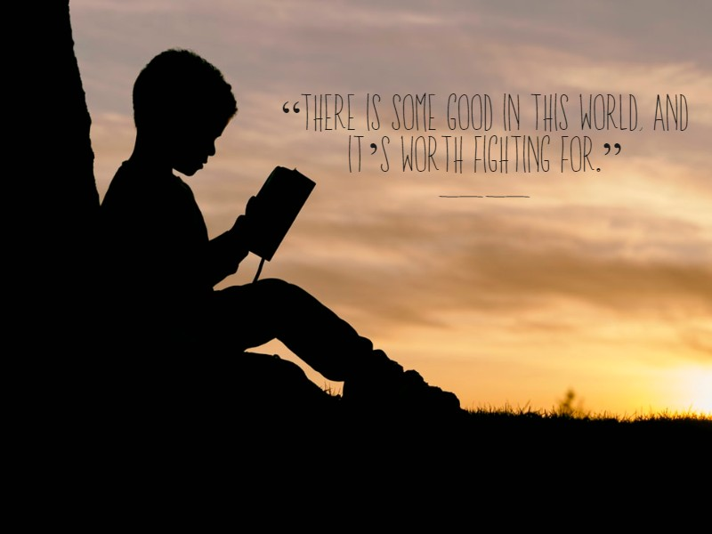
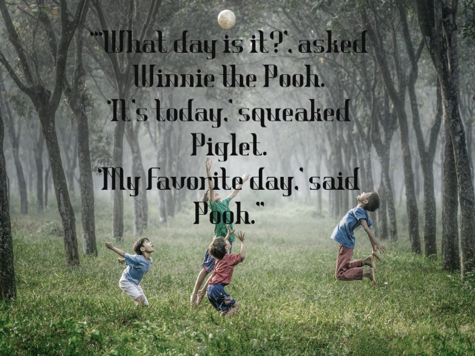
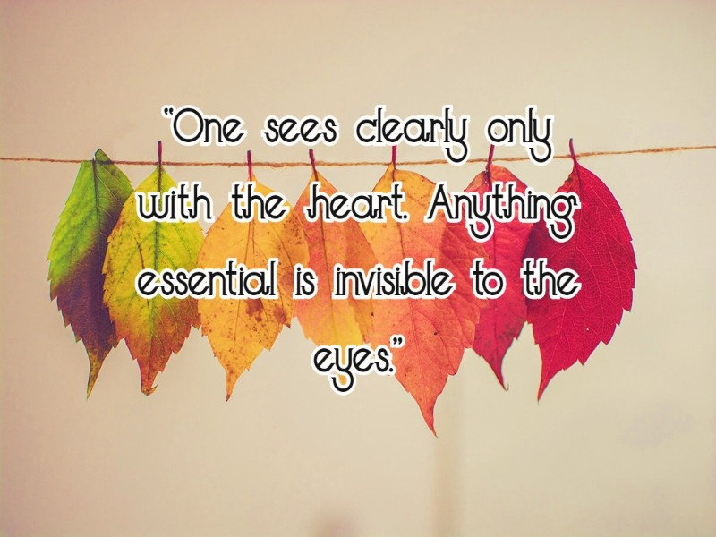
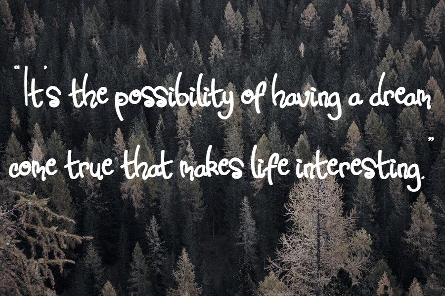

Knjige su kompasi, teleskopi, sekstantici karte, koje su drugi ljudi pripremili da nam pomognu ploviti po opasnim morima ljudskog života.
Joan Lippman

—The Two Towers by J.R.R. Tolkien

—The Adventures of Winnie the Pooh by A.A. Milne

—The Little Prince by Antoine de Saint-Exupéry

—The Alchemist by Paulo Coelho —Beloved by Toni Morrison